Synthesis of Tactical Plans for Robotic Excavation
Sanjiv Singh · Carnegie Mellon University PhD thesis in Robotics
한줄 요약 — 토양 상태를 완전 모델링하는 대신 굴착 행동공간을 정의하고, 기하 제약과 실험 데이터로 학습한 저항력·관절토크 제약 아래 한 단계 계획을 최적화하여 유압 로봇이 지형을 다시 측정하며 목표 트렌치를 만드는 폐루프 전술계획의 기초를 제시했다. 동시에 실행 중 지반 오차를 수정할 반응제어의 필요성도 확인했다.
1.연구 배경 및 동기
변형 토양의 상태폭발을 피해 ‘다음 한 번의 굴착’을 계획하다
굴착은 단순한 로봇 팔 경로추종 문제가 아니다. 토양은 도구가 통과할 때 전단되고 밀리며 다시 쌓이므로 작은 작업영역도 모든 입자나 격자 높이로 표현하면 상태차원이 급격히 커진다. 논문은 3 m×3 m 지면을 10 cm 격자로만 이산화해도 900개의 지형 변수가 필요하다는 예를 들며, 전통적인 상태공간 탐색이 당시의 계산능력으로는 실용적이지 않다고 설명한다. 더구나 토양 반응은 조성·수분·입도뿐 아니라 과거 압밀과 교란 이력에도 좌우되어, 한 번의 굴착 결과를 정확히 예측하는 해석모델조차 만들기 어렵다.
저자는 전체 작업을 전략계획, 전술 굴착계획, 저수준 제어의 세 층으로 나눈다. 상위 전략계획은 넓은 작업장을 장비가 접근할 수 있는 패치와 버킷 폭의 트렌치로 분할하고 순서를 정한다. 이 논문의 핵심인 전술계획은 현재 지형에서 어디를 어떤 자세와 깊이로 한 번 굴착할지 결정한다. 저수준 제어는 계획한 궤적을 실제 토질에 맞춰 수정해야 하지만, 시험장비의 점대점 인터페이스 때문에 본 연구에서는 위치제어에 머물렀다. 따라서 논문의 기여와 한계가 처음부터 명확히 분리된다.
장기 행동열을 전역 최적화하지 않은 것은 단순한 계산 절약이 아니다. 부정확한 토양모델로 여러 굴착 뒤의 상태를 전개하면 오차가 누적되어 전역 최적이라는 주장 자체가 의미를 잃는다. 그래서 매 굴착 뒤 지형을 다시 측정하고, 현재 상태에서 실행 가능한 원형 행동 가운데 단기 효용이 큰 하나를 선택하는 탐욕적 폐루프를 택한다. 이는 완전한 물리모델 대신 감지와 재계획을 반복하는 현대 필드로봇의 receding-horizon 관점과 맞닿아 있다.
선행 연구의 한계
입자 또는 세밀한 고도격자로 토양 전체 상태를 표현하면 상태공간이 지나치게 커져 전통적인 구성공간 계획과 동적계획법을 적용하기 어렵다.
Fundamental Equation of Earthmoving과 쐐기모델은 균질토양과 단순 운동을 전제하며 압축·가속·퇴적 같은 현상을 충분히 설명하지 못한다.
여러 굴착을 미리 전개하는 전역계획은 각 단계의 지형·힘 예측오차가 누적되므로 신뢰하기 어렵다.
기존 시험장비의 점대점 제어기는 움직이는 동안 목표를 바꾸거나 로봇 자세를 조회할 수 없어 실시간 순응·강성 제어가 불가능했다.
이 연구의 기여
굴착 작업을 기구학 상태가 아닌 소수 작업변수로 나타내는 action-space 표현을 제안했다.
목표 형상, 도달성, 버킷 용량, 예측 저항력과 관절토크를 동일 행동공간의 제약으로 통합했다.
토공역학에서 얻은 기저함수와 실제 힘 데이터를 결합해 저항력을 학습·예측하는 방법을 비교했다.
레이저 지형센서와 6축 힘·토크센서를 갖춘 유압 시험대에서 전체 감지-계획-실행 주기를 구현했다.
힘은 계획 단계뿐 아니라 실행 단계에서도 고려되어야 한다는 결론과 반응형 하위제어의 필요성을 실험으로 제시했다.
2.방법론 및 시스템 구성
행동공간은 로봇의 모든 관절궤적을 직접 탐색하지 않고 사람이 실제로 사용하는 굴착 패턴을 원형 행동으로 제한한다. 트렌칭 행동은 침투, 수평 끌기, 말아올리기의 세 구간으로 구성되며 처음에는 시작위치 k, 침투각 α, 침투거리 d1, 끌기거리 d2, 말아올리기 거리 d3, 회전반경 r, 버킷 경사각 ρ의 7개 변수로 기술된다. 접촉기하와 단조성 분석으로 종속변수를 제거해 실제 탐색공간은 독립변수 (k, α, d1)의 3차원 공간으로 축소한다.
각 후보 행동은 목표 경계를 넘지 않는 shaping 제약, 로봇 작업공간 안에 머무는 reachability 제약, 버킷 용량을 과도하게 넘지 않는 volume 제약, 예측 저항력을 관절토크로 변환했을 때 장비 한계를 넘지 않는 force 제약을 순서대로 통과해야 한다. 실행 가능한 후보에는 일차 효용인 굴착 체적과 보조 효용인 최대 또는 누적 관절토크를 부여한다. 구현은 이산화한 공간의 전수검색을 사용하되, 한 축에서 feasible에서 infeasible로 전환되면 이후 셀을 생략하고 계산비용이 싼 제약부터 검사해 탐색량을 줄인다.
저항력 모델은 해석 쐐기모델을 그대로 쓰지 않고, 그 모델이 알려주는 깊이 제곱·버킷 경사·전방 지형·이동 체적 같은 물리적 변수를 기저함수로 사용한다. 같은 입력 표현에 대해 전역 선형회귀, 최근접·국소가중회귀, 단일 은닉층 신경망을 비교하며, 힘 예측값은 매니퓰레이터 자코비안으로 관절토크로 변환된다. 한 번의 행동을 실행한 뒤에는 레이저로 지형을 재구성해 다음 계획을 다시 계산한다.
처리 파이프라인
1
목표와 현재 지형 입력
목표 트렌치 경계를 고도 프로파일로 지정하고, 레이저 거리영상 10장을 픽셀별 중앙값 필터링한 뒤 5 cm 격자의 단일고도 지도로 변환한다.
후보가 목표 경계를 침범하지 않는지, 모든 버킷 자세가 로봇 작업공간에 있는지, 필요할 경우 쓸어낸 체적이 버킷 용량에 맞는지 검사한다.
4
학습 저항력과 토크 제약
과거 굴착의 지형·행동·6축 힘 데이터를 이용해 궤적별 저항력을 예측하고, 자코비안과 중력항으로 관절토크를 산출해 설정 한계와 비교한다.
5
제약 최적화와 행동 선택
실행 가능한 후보 중 최소 굴착량 임계치를 만족시키면서 굴착 체적을 최대화하고 최대 또는 누적 토크를 줄이는 후보를 전수검색 또는 모의담금질로 고른다.
6
실행·재측정·반복
점대점 명령열로 선택 행동을 실행하고 힘을 기록한다. 새 지형을 다시 스캔해 목표 형상 또는 최소 효용 종료조건까지 계획 주기를 반복한다.
원문 수식과 의미
학습 저항력의 선형 기저모델
G_1k_1+\cdots+G_nk_n=F
행동과 전방 지형을 나타내는 물리 기반 기저함수 G와 데이터에서 추정한 계수 k로 버킷 저항력 F를 근사한다.
관절 요구토크 분해
\tau=\tau_{tip}+\tau_{grav}
후보 궤적의 관절토크를 버킷 끝 저항력에 의한 토크와 로봇 자체 중력에 의한 토크로 분해한다.
끝단 힘의 관절토크 변환
\tau_{tip}=J_m^T F
학습 모델이 예측한 버킷 좌표계 힘을 좌표변환한 뒤 매니퓰레이터 자코비안 전치로 관절토크 제약에 연결한다.
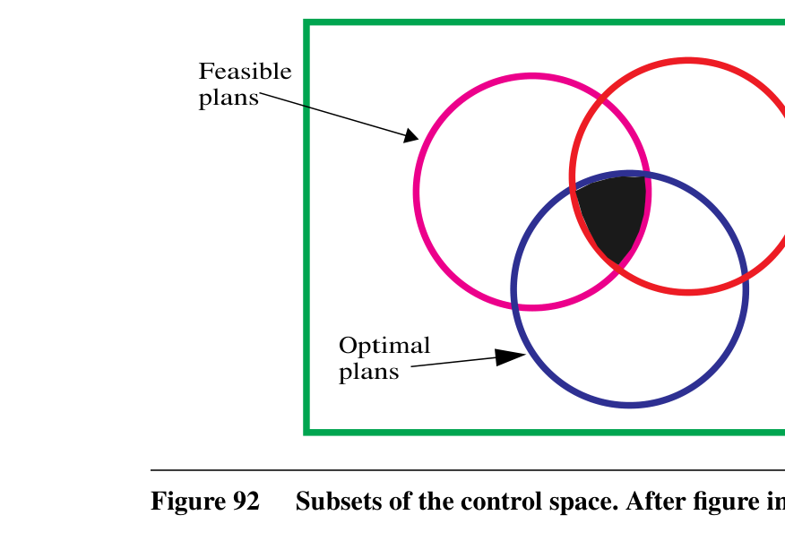
원문 Figure 92 · PDF p.129 — Figure 92 Subsets of the control space. After figure in [Kirk70].
3.핵심 기술
작업을 직접 부호화하는 3차원 행동공간
핵심 설계 원칙은 기구가 아니라 작업을 부호화하는 것이다. 동일한 트렌칭 패턴을 수행할 수 있다면 관절구성이 다른 장비도 같은 행동공간을 공유하고, 차이는 도달성·토크 제약 함수에만 반영된다. 이는 장비별 관절궤적 데이터베이스보다 이식성이 높은 표현이다.
인간 작업자의 패턴을 무비판적으로 복제하지 않고 접촉분석으로 버킷 자세를 다듬는다. 침투 시 버킷 뒷면이 토양을 누르지 않도록 시험대에서는 이동각보다 약 10° 큰 경사 오프셋을 사용하고, 끌기 단계의 회전율은 50°/m로 설정한다. 말아올리기는 접촉면에서 벗어나는 최소 회전반경과 도달 가능한 종료자세를 함께 만족시킨다.
트렌칭 탐색변수: 시작위치 k, 침투각 α, 침투거리 d1
원래 7개 변수 중 끌기거리·버킷 경사·회전반경·말아올리기 거리는 분석적으로 결정
행동공간은 로봇 기구와 독립되고 기구 특성은 제약으로 주입
한 단계 계획이므로 부정확한 장기 토양상태 예측을 피함
기하·힘 제약의 통합
목표형상 제약은 구조적 안전을 위해 과굴착을 금지하고, 도달성 제약은 위치뿐 아니라 버킷 경사까지 포함한다. 체적 제약은 힘 모델이 없을 때 지나치게 큰 굴착을 막지만, 쓸어낸 체적과 실제 적재량이 느슨한 토양과 점착성 토양에서 다르게 나타나므로 절대적인 지표가 아니다.
힘 제약은 후보 행동의 전 구간에 대해 저항력을 예측하고 관절토크로 바꾸어 장비 한계를 넘는 후보를 제거한다. 시험대에서는 손목 관절이 가장 먼저 정지하므로 이 관절의 접촉·중력 토크만 검사하는 단순화도 사용했다. 이 구조 덕분에 힘 모델은 경로 생성기의 사후 검사기가 아니라 행동 가능성을 정의하는 계획요소가 된다.
shaping·reachability·volume·force 제약을 동일 후보에 순차 적용
계산이 싼 도달성 표 조회를 먼저, 비싼 궤적 힘 예측을 마지막에 수행
쓸어낸 체적을 일차 효용, 최대·누적 토크를 보조 효용으로 설정
힘 제약이 신뢰할 만하면 부정확하고 비싼 체적 제약을 생략할 수 있음
토공역학으로 구조화한 데이터 기반 힘 예측
저자는 쐐기모델이 정밀 예측에는 부족하지만 어떤 변수가 중요한지 알려주는 귀중한 사전지식이라고 본다. 따라서 깊이의 제곱, 버킷 경사, 절삭면 앞·옆의 지형 높이, 이동 체적을 학습 입력으로 사용한다. 순수 기하 입력보다 이 물리 기반 표현이 다섯 비교조건 중 세 조건에서 예측오차를 뚜렷하게 줄였다.
학습법 자체보다 운용조건에 맞는 선택이 중요하다. 전역회귀는 빠르고 작지만 국소 비선형성을 놓치고, 국소가중회귀는 새 경험을 즉시 넣기 쉽지만 모든 데이터를 저장하며 질의가 느리다. 신경망은 예측이 빠르고 표현이 작지만 은닉노드 수와 반복학습을 시행착오로 정해야 한다. 논문은 정확도만으로 단일 승자를 선언하지 않는다.
약 30회 굴착의 약 4,000개 힘 측정으로 예측법 비교
10-fold 교차검증과 평균절대오차 사용
전역회귀, 최근접, LWR, MARS 가중 LWR, 30-은닉유닛 신경망 비교
새 토질에 빠르게 적응할 때는 메모리 기반법, 고정 학습세트가 있으면 신경망이 유리
재감지를 포함한 전술 폐루프
시스템은 한 번 계획하고 끝나지 않는다. 각 굴착 뒤 레이저 스캔으로 고도지도를 갱신하고, 새 지형에서 후보를 다시 평가한다. 이 반복은 토사 붕괴와 적재량 차이처럼 모델이 놓친 변화를 다음 행동에 반영하는 장치다.
그러나 한 행동 안에서는 점대점 제어가 개방루프이므로 스캔 오차나 예상보다 단단한 토질에 즉시 반응하지 못한다. 논문이 최종적으로 강조하는 두 번째 힘 계층, 즉 실행 중 힘에 따라 명목 궤적을 바꾸는 반응형 제어는 후속 연구로 남는다.
감지-후보생성-제약검사-선택-실행을 목표 달성까지 반복
고도지도는 5 cm 셀의 2.5D 표현
힘센서는 모델 학습과 초기 접촉 검출에 사용
전술계획과 저수준 힘 순응의 이중 안전구조 필요
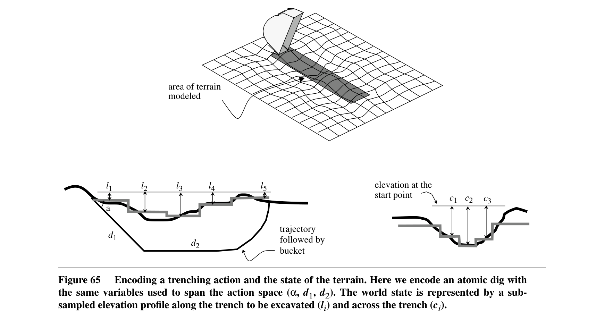
원문 Figure 65 · PDF p.93 — Figure 65 Encoding a trenching action and the state of the terrain. Here we encode an atomic dig with the same variables used to span the action space (α, d1, d2). The world state is represented by a sub- sampled elevation profile along the trench to be excavated (li) and across the trench (ci).
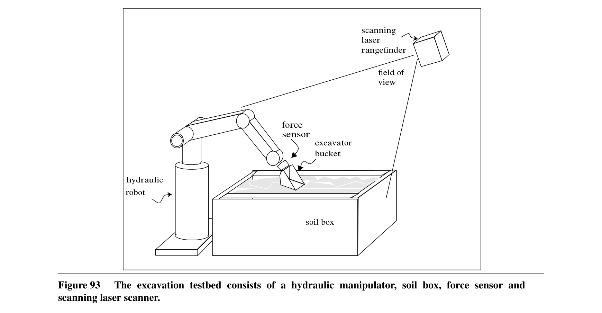
원문 Figure 93 · PDF p.133 — Figure 93 The excavation testbed consists of a hydraulic manipulator, soil box, force sensor and scanning laser scanner.
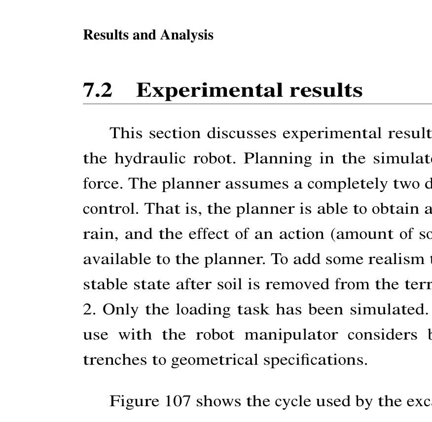
원문 Figure 107 · PDF p.144 — Figure 107 shows the cycle used by the excavation system.
4.실험 결과
실험 환경·장비·데이터
Cincinnati Milacron T3-566 산업용 유압 로봇에 소형 상용 트렌처 버킷을 장착했다. 로봇의 끝단 정격하중은 150 lb이다.
3 m×3 m×1 m 토양상자, Perceptron 2차원 레이저 스캐너, JR3 6축 힘·토크센서를 사용했다.
레이저 거리영상을 5 cm 격자 고도지도로 만들고, 한 지도마다 10개 거리영상을 중앙값 필터링했다.
시험 토질은 모래와 표토이며, 동일한 압밀·수분 상태를 재현하기 어려운 실제 토사조건을 포함했다.
시뮬레이션에서는 전면로더와 전면셔블의 적재를, 실물 시험대에서는 목표 기하의 트렌칭을 평가했다.
실험 프로토콜
목표 트렌치와 현재 고도지도를 입력해 (k, α, d1) 후보를 이산화했다.
형상·도달성·체적·힘 제약의 조합과 손목 토크한계 500 Nm 또는 1,000 Nm 조건을 비교했다.
힘 예측은 약 30회 굴착에서 얻은 약 4,000개 측정으로 학습하고 10-fold 교차검증했다.
실행 후 레이저로 지형을 재측정하고 목표 형상 또는 최소 굴착효용 종료조건까지 반복했다.
힘 제약 유무, 체적 제약 유무, 굴착체적 최대화, 최대토크 최소화, 누적토크 최소화를 바꾸어 계획행동 변화를 관찰했다.
문헌 전체로 400회를 넘는 시험을 수행했으며 결과 장에서는 T3 로봇의 모래·표토 굴착이 약 450회라고 보고한다.
비교 기준
기하 제약만 사용하는 전면로더·전면셔블 적재 시뮬레이션
해석 쐐기모델, 전역회귀, 최근접법, 국소가중회귀, 신경망 힘 예측
형상·도달성·체적만 사용하는 계획과 힘 제약을 추가한 계획
손목 토크한계 500 Nm와 1,000 Nm 조건
누적토크 최소화, 최대토크 최소화, 굴착체적 최대화 목적함수
평가 지표
저항력 예측 평균절대오차와 큰 힘 구간의 예측잔차 분포
굴착당 쓸어낸 체적과 버킷 용량 대비 효율
제약별 feasible 후보와 계획 계산시간
고도지도 표적의 잔류 고도오차
선택 행동의 최대·누적 관절토크와 목표 형상 만족 여부
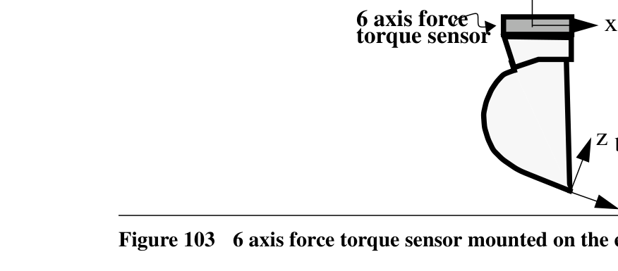
원문 Figure 103 · PDF p.140 — Figure 103 6 axis force torque sensor mounted on the excavator bucket.
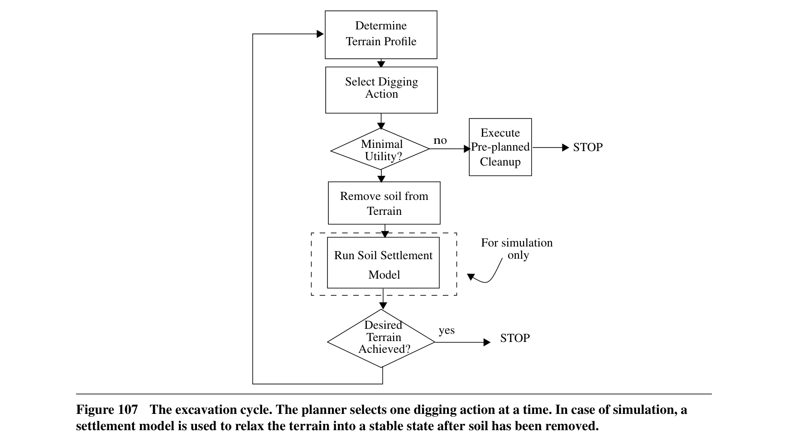
원문 Figure 107 · PDF p.144 — Figure 107 The excavation cycle. The planner selects one digging action at a time. In case of simulation, a settlement model is used to relax the terrain into a stable state after soil has been removed.
핵심 결과 해석
물리 기반 기저함수는 순수 기하 입력보다 안정적인 힘 예측을 제공했다. 10-fold 교차검증에서 mechanics-based 입력을 사용한 MARS 가중 LWR의 평균절대오차는 62.92 N이었고, 기본 LWR과 30-은닉유닛 신경망도 각각 65.37 N과 64.67 N으로 비슷했다. 반면 쐐기모델은 최적 파라미터를 찾기 위해 수일의 전수탐색이 필요하고도 대략 100 N의 평균절대오차에 머물렀다. 정확도 차이가 압도적이지 않으므로 저자는 새 데이터 반영 용이성, 예측시간, 메모리 사용량까지 함께 보아야 한다고 정리한다.
적재 시뮬레이션은 힘 제한이 생산성에 직접 연결됨을 보였다. 기하만 고려한 전면로더는 용량 48 단위에서 13회 굴착으로 작업을 끝내고 행동당 평균 46.4 단위를 제거했다. 힘 제약을 추가하면 평균 처리량은 32.3 단위, 효율은 약 95%에서 67%로 낮아졌다. 이는 힘을 무시한 계획이 기하적으로는 매력적이어도 실제 장비에는 실행 불가능할 수 있음을 보여준다.
실물 트렌칭에서는 형상·도달성·힘 제약만으로도 목표 프로파일을 반복 생성했으며, 1,000 Nm 한계에서 계획한 행동은 버킷 용량의 최소 95%를 쓸어내도록 선택될 수 있었다. 체적만 최대화하는 목적함수가 평균 굴착량은 가장 컸지만 그 결과는 신뢰할 만한 힘 제약이 있었기 때문에 가능했다. 전체 결과는 전술계획 수준의 힘 예측이 과도하게 어려운 행동을 거르는 데 필수적이지만, 지형센서와 힘 모델의 잔차를 처리하려면 행동 실행 중의 반응형 제어도 필수라는 결론으로 이어진다.
레이저 거리 스케일의 작은 오차도 버킷이 지면에 닿지 않거나 지나치게 깊이 진입하는 계획오차로 증폭되었다.
버킷 접촉검출 중 로봇 끝단이 명령점을 지나 진동하면 힘센서가 실제 최초 접촉을 놓쳐 고도지도를 잘못 보정할 수 있었다.
느슨한 토양에서는 쓸어낸 체적이 실제 적재량을 과대평가하고, 점착성 토양에서는 토사 덩어리 때문에 버킷이 과적재되어 체적 제약의 일관성이 낮았다.
500 Nm 조건의 두 반복시험은 초기에 비슷했지만 작은 지형·행동 차이가 누적되어 후반의 굴착순서가 달라졌다.
한 행동 안에서 궤적을 바꾸지 못하므로 예상보다 단단한 토질과 센서오차에 즉시 대응하지 못했다.
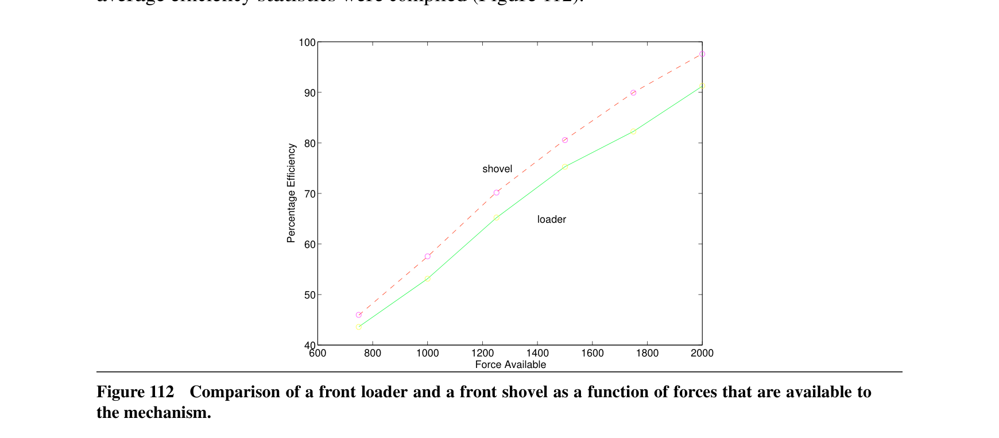
원문 Figure 112 · PDF p.148 — Figure 112 Comparison of a front loader and a front shovel as a function of forces that are available to the mechanism.
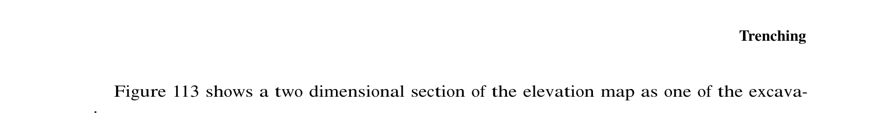
원문 Figure 113 · PDF p.149 — Figure 113 shows a two dimensional section of the elevation map as one of the excava-
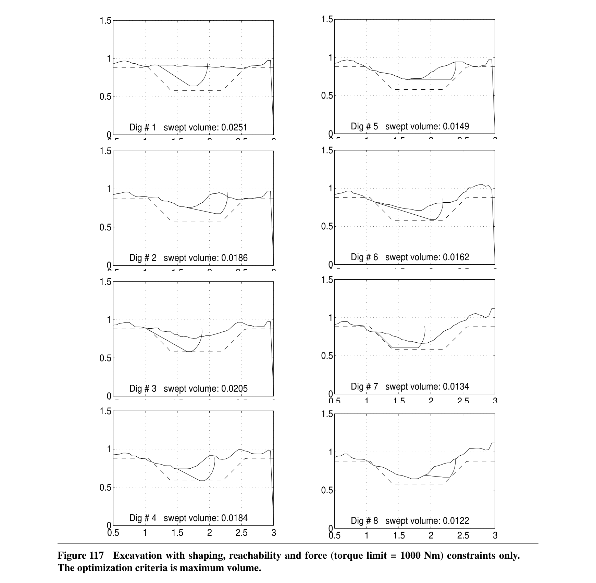
원문 Figure 117 · PDF p.155 — Figure 117 Excavation with shaping, reachability and force (torque limit = 1000 Nm) constraints only. The optimization criteria is maximum volume.
5.한계 및 향후 연구
현재 한계
전술계획은 한 단계 효용만 최적화하므로 전체 행동열의 전역 최적성과 막다른 상태 회피를 보장하지 않는다.
상위 coverage·전략계획과 실행 중 반응형 힘제어는 연구범위 밖이며 목표는 단일 버킷 폭의 swath로 주어진다.
2.5D 단일고도 지도는 수직면·오버행을 표현하지 못하고 레이저 온도 드리프트와 가림에 민감하다.
힘 모델은 특정 시험대와 제한된 모래·표토 경험에 기반해 새로운 토질·버킷·대형 장비로의 일반화가 검증되지 않았다.
시험 로봇의 점대점 인터페이스는 이동 중 자세 측정과 목표수정을 막아 순응·강성 제어를 구현할 수 없었다.
동일한 압밀과 수분의 초기 토양상태를 재현하기 어려워 세밀한 제어변수의 인과 비교가 제한되었다.
향후 연구
계획 토크한계와 별도로 실시간 힘·압력에 따라 깊이와 버킷 자세를 바꾸는 저수준 반응제어를 결합해야 한다.
넓은 작업장을 장비 위치와 트렌치 순서로 분해하는 전략·coverage planner가 국소 행동공간에 중간목표를 제공해야 한다.
다른 장비와 토질에서 힘 모델을 온라인 갱신하고 물리 사전지식과 불확실성 추정을 함께 활용할 필요가 있다.
고도지도 오차와 힘 예측오차를 확률 제약 또는 안전여유로 계획기에 반영해야 한다.
실제 버킷 적재량 센싱을 도입해 불안정한 swept-volume 제약을 대체하거나 보정해야 한다.
6.한마디로 정리
핵심 방법은?
사람의 굴착 패턴을 3차원 행동공간으로 압축하고 기하·학습 힘·토크 제약을 통과한 한 단계 행동을 반복 선택한다.
핵심 결과는?
유압 시험대의 수백 회 굴착에서 목표 트렌치를 생성하고, 힘 제약이 기하 전용 계획의 실행 불가능성을 줄임을 보였다.
한계는?
재계획은 굴착 사이에만 일어나므로 센서·힘 모델의 오차를 행동 도중 보정할 저수준 폐루프가 여전히 필요하다.
#작업·궤적계획#학습·RL·IL·VLA#제어·MPC#action-space planning#constrained optimization#learned force prediction#force-aware control
나의 의견 / 우리 연구와의 연관성
이 논문은 오늘날의 학습 기반 자율굴착을 ‘정책을 무엇으로 표현할 것인가’라는 관점에서 다시 보게 한다. 현재의 강화학습도 상태와 행동을 무작정 크게 잡으면 데이터 요구량과 안전탐색 비용이 커진다. 침투·끌기·말아올리기와 같은 작업 프리미티브를 정책의 action prior로 쓰고, 도달성·설계면·유압압력 제약을 별도 안전필터로 두면 학습정책의 자유도와 위험을 동시에 줄일 수 있다.
또한 저항력 모델을 완벽한 예측기가 아니라 후보를 거르는 제약모델로 사용한 점이 중요하다. 우리 연구에서는 LiDAR 지형, 실린더 압력, 관절상태로 후보 궤적의 힘 분포와 불확실성을 예측하고, 실제 굴착 중에는 force-aware MPC나 DMP coupling이 남은 오차를 보정하는 이중 구조로 확장할 수 있다.
행동공간 변수를 현대 DMP·motion primitive 또는 계층형 RL의 고수준 action으로 재사용
학습 힘 모델의 평균값뿐 아니라 예측분산을 토크·미끄럼·전복 chance constraint로 변환
5 cm 고도격자를 실시간 LiDAR elevation map과 설계면 차이 지도로 대체
전술계획은 굴착 사이, robust MPC는 패스 내부에서 동작하는 이중 주기 제어 구성
버킷 적재량·토질 임베딩을 추가해 swept-volume의 느슨한 토질 의존성을 보정
7.전체 그림·표
본문 핵심 위치에 배치하지 않은 원문 Figure와 Table을 원문 페이지 순서로 수록한다.
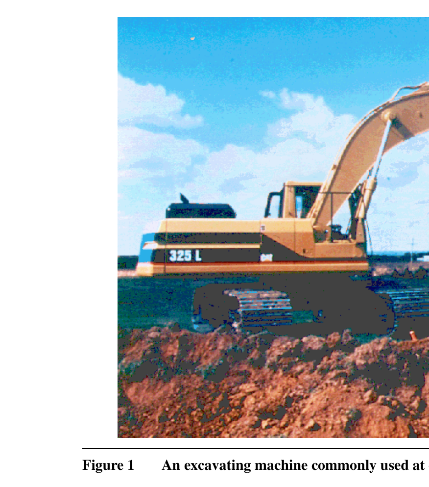
원문 Figure 1 · PDF p.10 — Figure 1 An excavating machine commonly used at construction sites.
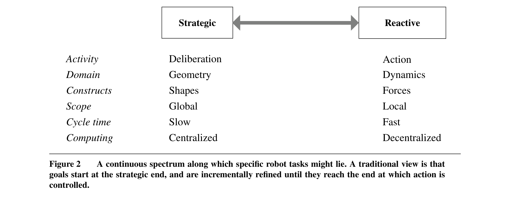
원문 Figure 2A · PDF p.13 — Figure 2 A continuous spectrum along which specific robot tasks might lie. A traditional view is that goals start at the strategic end, and are incrementally refined until they reach the end at which action is controlled.
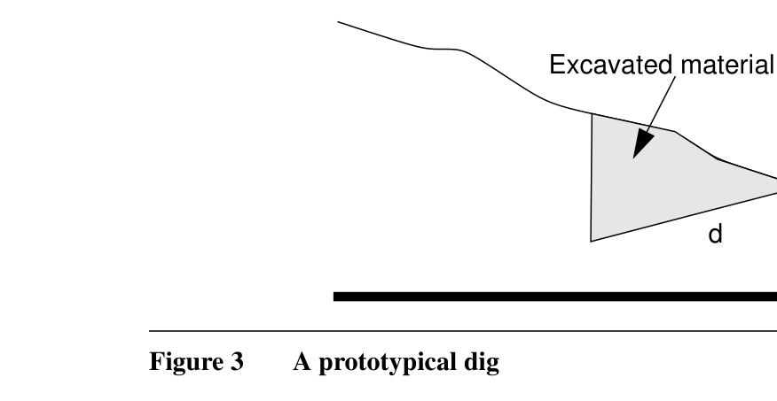
원문 Figure 3A · PDF p.16 — Figure 3 A prototypical dig
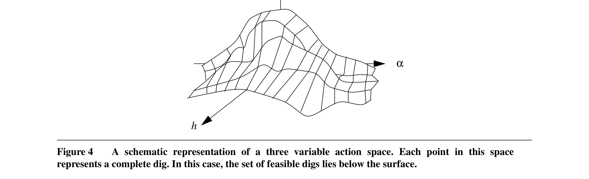
원문 Figure 4A · PDF p.17 — Figure 4 A schematic representation of a three variable action space. Each point in this space represents a complete dig. In this case, the set of feasible digs lies below the surface.
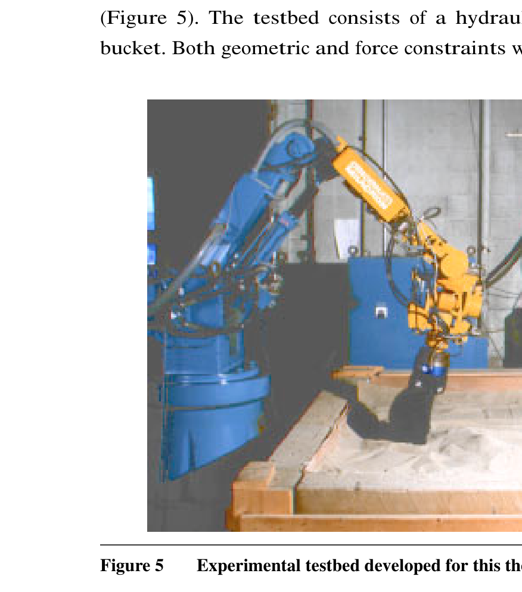
원문 Figure 5 · PDF p.18 — Figure 5 Experimental testbed developed for this thesis.
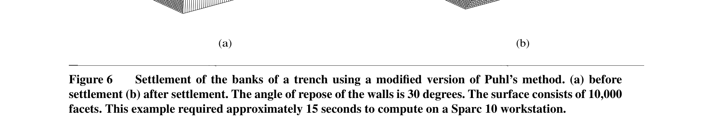
원문 Figure 6 · PDF p.23 — Figure 6 Settlement of the banks of a trench using a modified version of Puhl’s method. (a) before settlement (b) after settlement. The angle of repose of the walls is 30 degrees. The surface consists of 10,000 facets. This example required approximately 15 seconds to compute on a Sparc 10 workstation.
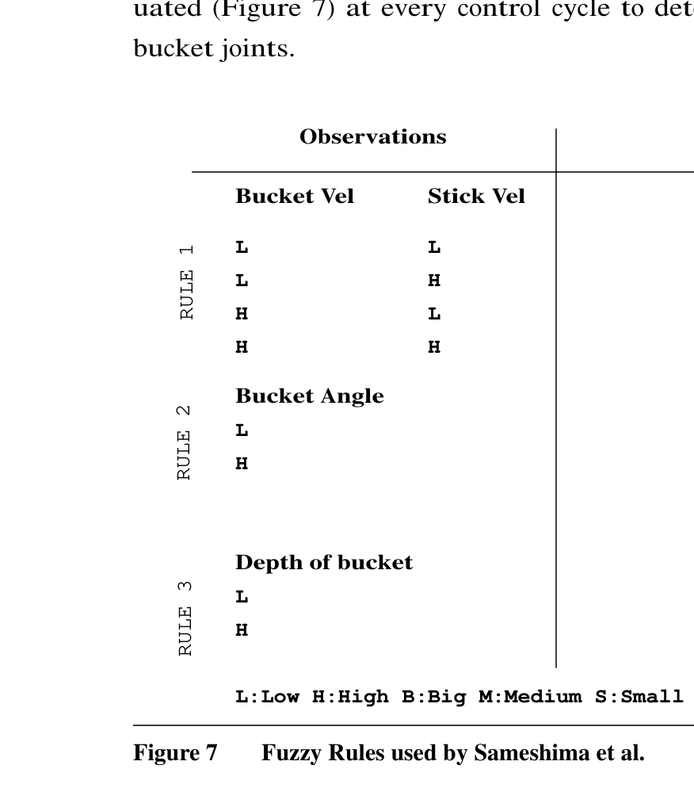
원문 Figure 7 · PDF p.28 — Figure 7 Fuzzy Rules used by Sameshima et al.
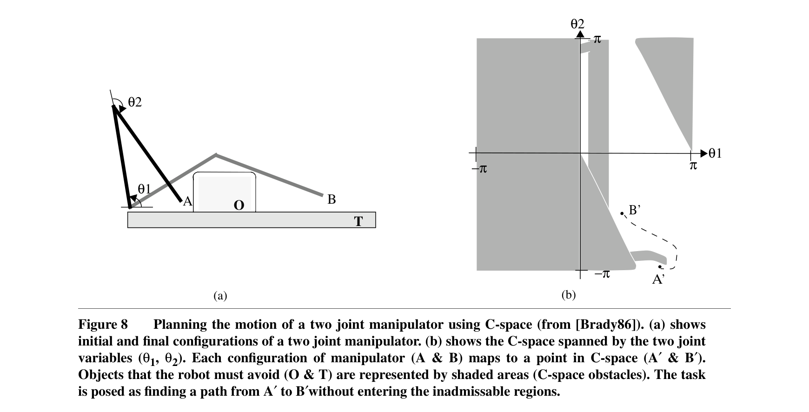
원문 Figure 8 · PDF p.37 — Figure 8 Planning the motion of a two joint manipulator using C-space (from [Brady86]). (a) shows initial and final configurations of a two joint manipulator. (b) shows the C-space spanned by the two joint variables (θ1, θ2). Each configuration of manipulator (A & B) maps to a point in C-space (A′ & B′). Objects that the robot must avoid (O & T) are represented by shaded areas (C-space obstacles). The task is posed as finding a path from A′ to B′without entering the inadmissable regions.
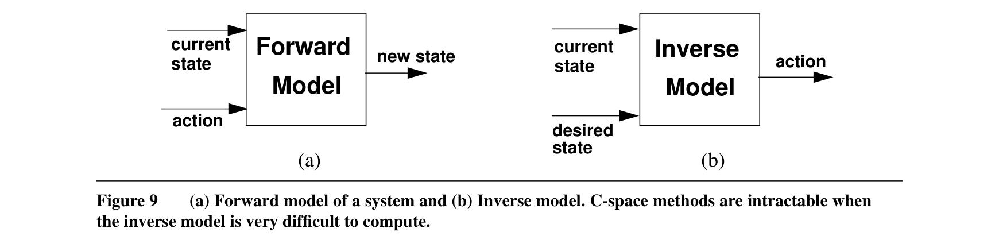
원문 Figure 9 · PDF p.38 — Figure 9 (a) Forward model of a system and (b) Inverse model. C-space methods are intractable when the inverse model is very difficult to compute.
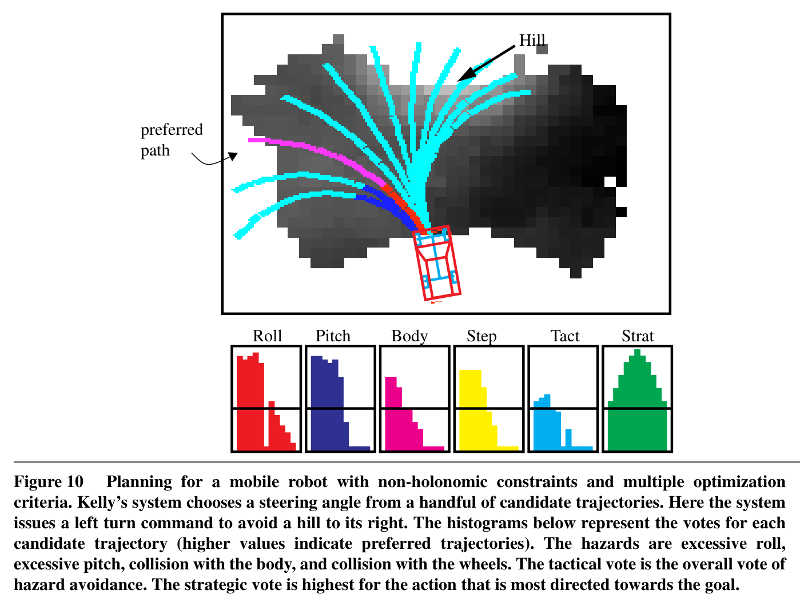
원문 Figure 10 · PDF p.39 — Figure 10 Planning for a mobile robot with non-holonomic constraints and multiple optimization criteria. Kelly’s system chooses a steering angle from a handful of candidate trajectories. Here the system issues a left turn command to avoid a hill to its right. The histograms below represent the votes for each candidate trajectory (higher values indicate preferred trajectories). The hazards are excessive roll, excessive pitch, collision with the body, and collision with the wheels. The tactical vote is the overall vote of hazard avoidance. The strategic vote is highest for the action that is most directed towards the goal.
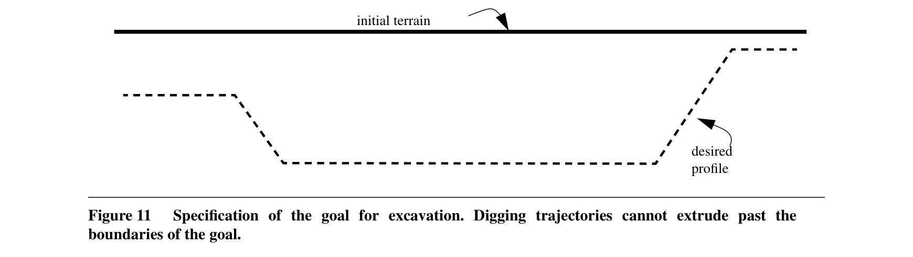
원문 Figure 11 · PDF p.42 — Figure 11 Specification of the goal for excavation. Digging trajectories cannot extrude past the boundaries of the goal.
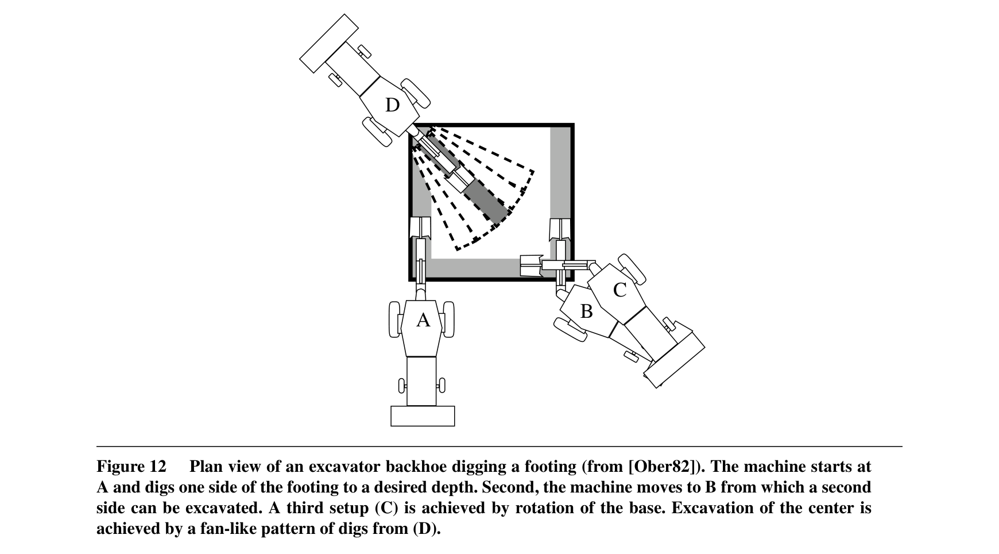
원문 Figure 12 · PDF p.43 — Figure 12 Plan view of an excavator backhoe digging a footing (from [Ober82]). The machine starts at A and digs one side of the footing to a desired depth. Second, the machine moves to B from which a second side can be excavated. A third setup (C) is achieved by rotation of the base. Excavation of the center is achieved by a fan-like pattern of digs from (D).
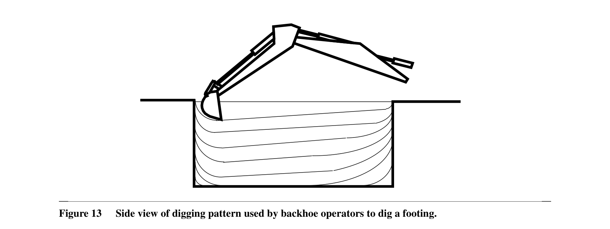
원문 Figure 13 · PDF p.44 — Figure 13 Side view of digging pattern used by backhoe operators to dig a footing.
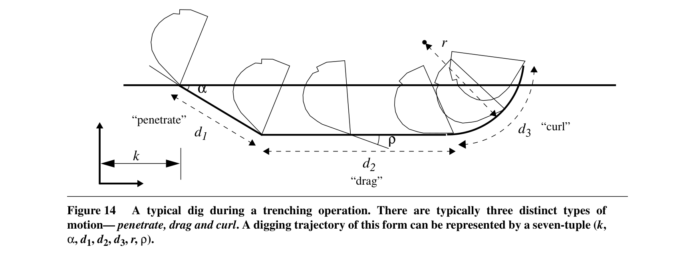
원문 Figure 14A · PDF p.44 — Figure 14 A typical dig during a trenching operation. There are typically three distinct types of motion— penetrate, drag and curl. A digging trajectory of this form can be represented by a seven-tuple (k, α, d1, d2, d3, r, ρ).
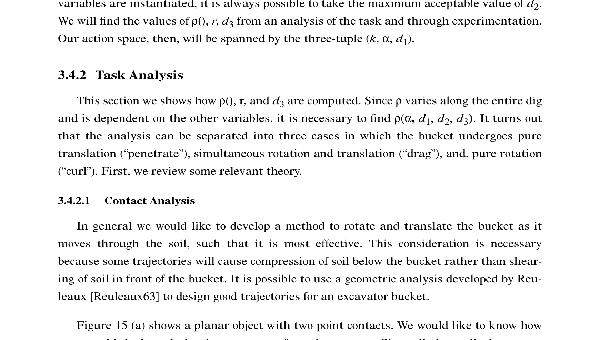
원문 Figure 15 · PDF p.45 — Figure 15 (a) shows a planar object with two point contacts. We would like to know how
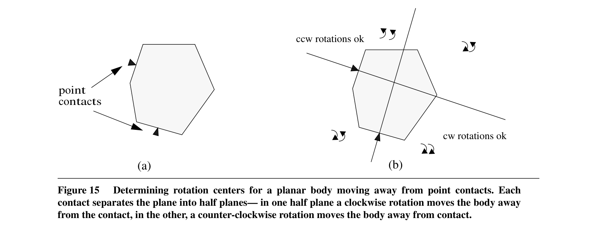
원문 Figure 15 · PDF p.46 — Figure 15 Determining rotation centers for a planar body moving away from point contacts. Each contact separates the plane into half planes— in one half plane a clockwise rotation moves the body away from the contact, in the other, a counter-clockwise rotation moves the body away from contact.
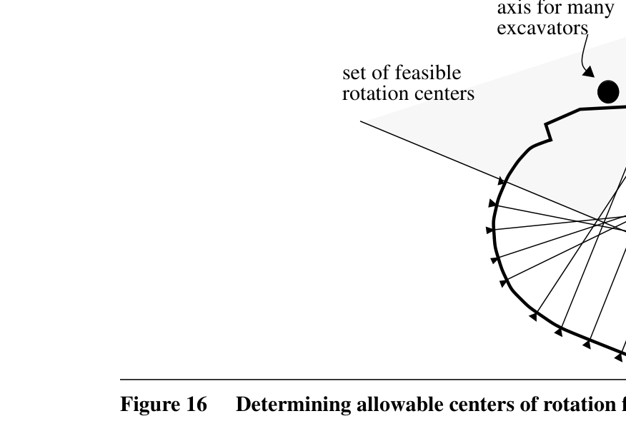
원문 Figure 16 · PDF p.47 — Figure 16 Determining allowable centers of rotation for an excavator bucket.
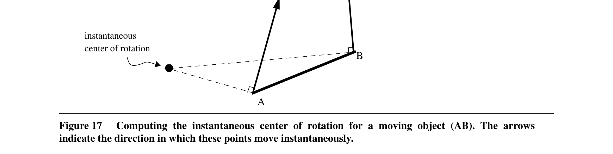
원문 Figure 17 · PDF p.47 — Figure 17 Computing the instantaneous center of rotation for a moving object (AB). The arrows indicate the direction in which these points move instantaneously.
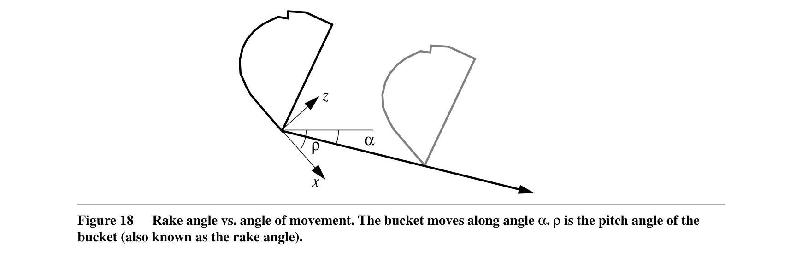
원문 Figure 18 · PDF p.48 — Figure 18 Rake angle vs. angle of movement. The bucket moves along angle α. ρ is the pitch angle of the bucket (also known as the rake angle).
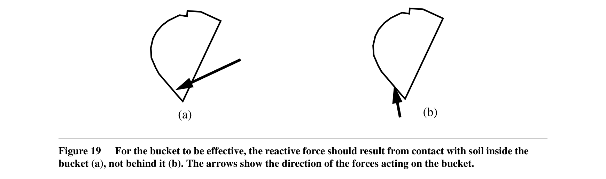
원문 Figure 19 · PDF p.48 — Figure 19 For the bucket to be effective, the reactive force should result from contact with soil inside the bucket (a), not behind it (b). The arrows show the direction of the forces acting on the bucket.
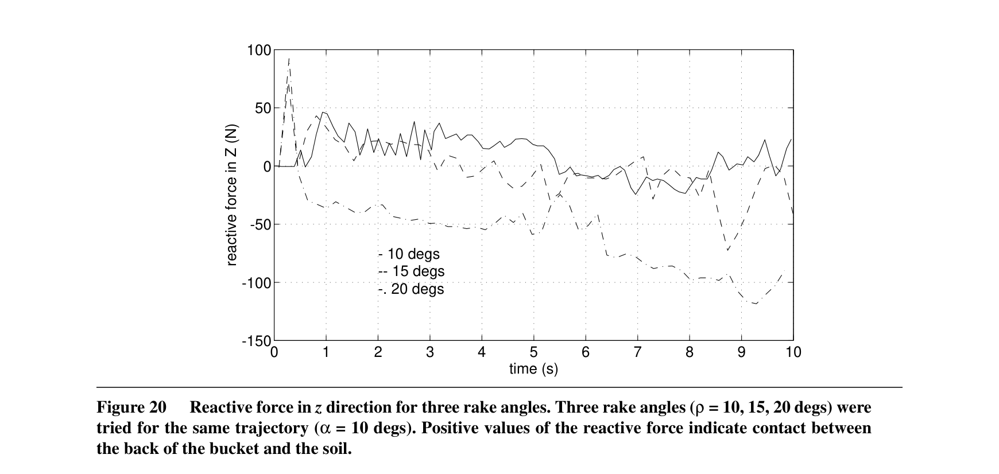
원문 Figure 20 · PDF p.49 — Figure 20 Reactive force in z direction for three rake angles. Three rake angles (ρ = 10, 15, 20 degs) were tried for the same trajectory (α = 10 degs). Positive values of the reactive force indicate contact between the back of the bucket and the soil.
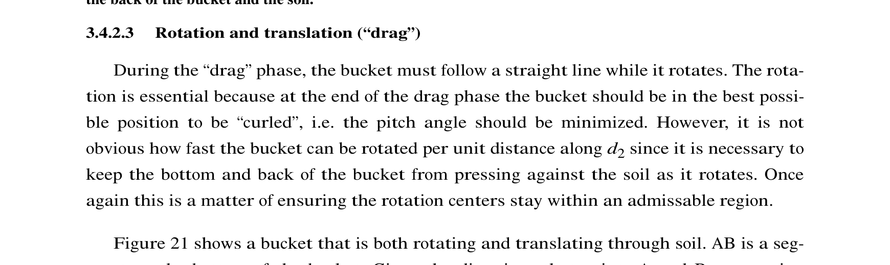
원문 Figure 21 · PDF p.49 — Figure 21 shows a bucket that is both rotating and translating through soil. AB is a seg-
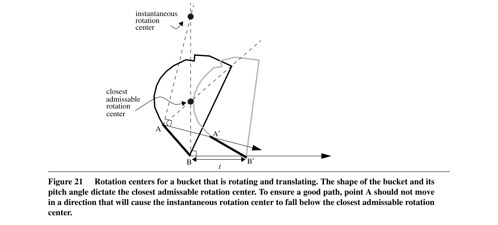
원문 Figure 21 · PDF p.50 — Figure 21 Rotation centers for a bucket that is rotating and translating. The shape of the bucket and its pitch angle dictate the closest admissable rotation center. To ensure a good path, point A should not move in a direction that will cause the instantaneous rotation center to fall below the closest admissable rotation center.
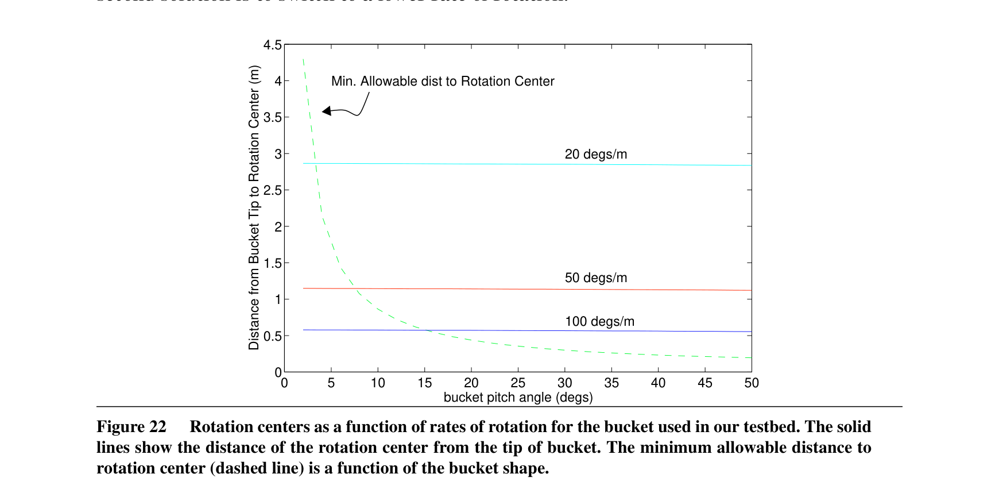
원문 Figure 22 · PDF p.50 — Figure 22 Rotation centers as a function of rates of rotation for the bucket used in our testbed. The solid lines show the distance of the rotation center from the tip of bucket. The minimum allowable distance to rotation center (dashed line) is a function of the bucket shape.
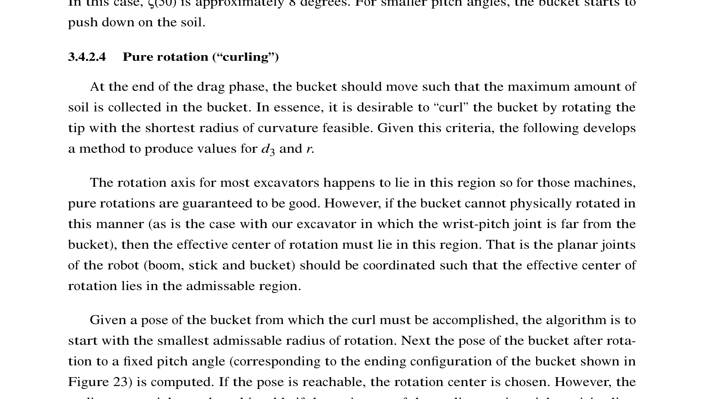
원문 Figure 23 · PDF p.51 — Figure 23) is computed. If the pose is reachable, the rotation center is chosen. However, the
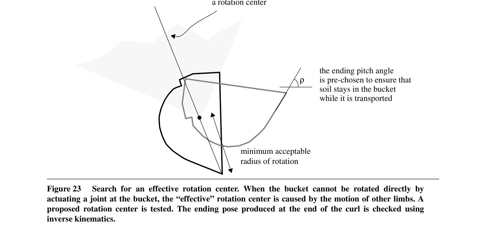
원문 Figure 23 · PDF p.52 — Figure 23 Search for an effective rotation center. When the bucket cannot be rotated directly by actuating a joint at the bucket, the “effective” rotation center is caused by the motion of other limbs. A proposed rotation center is tested. The ending pose produced at the end of the curl is checked using inverse kinematics.
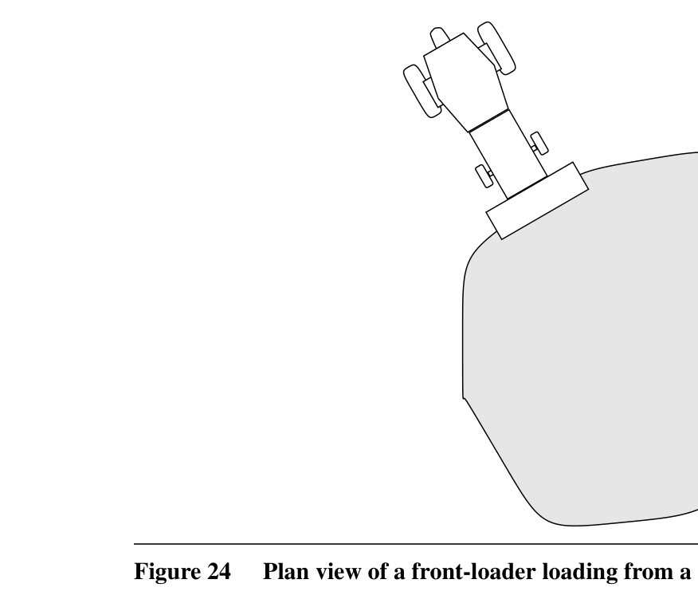
원문 Figure 24 · PDF p.53 — Figure 24 Plan view of a front-loader loading from a pile of soil.
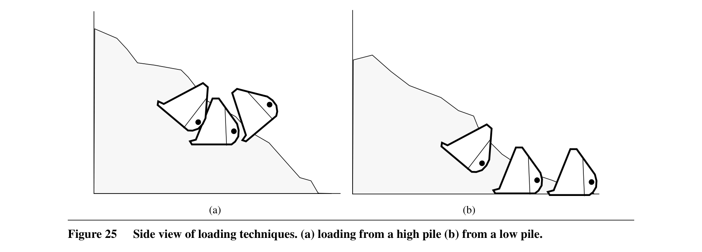
원문 Figure 25 · PDF p.53 — Figure 25 Side view of loading techniques. (a) loading from a high pile (b) from a low pile.
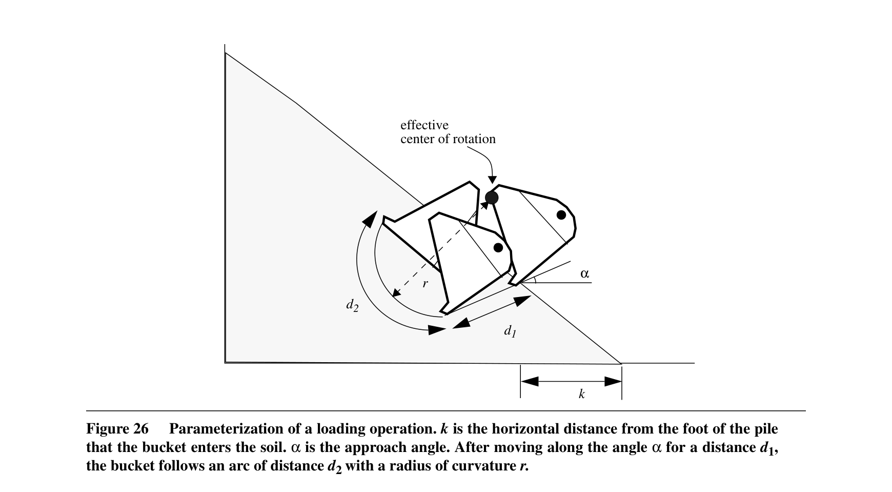
원문 Figure 26 · PDF p.54 — Figure 26 Parameterization of a loading operation. k is the horizontal distance from the foot of the pile that the bucket enters the soil. α is the approach angle. After moving along the angle α for a distance d1, the bucket follows an arc of distance d2 with a radius of curvature r.
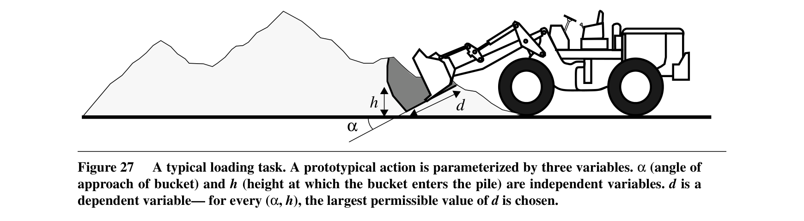
원문 Figure 27A · PDF p.58 — Figure 27 A typical loading task. A prototypical action is parameterized by three variables. α (angle of approach of bucket) and h (height at which the bucket enters the pile) are independent variables. d is a dependent variable— for every (α, h), the largest permissible value of d is chosen.
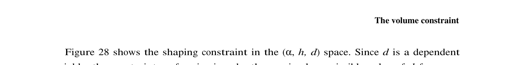
원문 Figure 28 · PDF p.59 — Figure 28 shows the shaping constraint in the (α, h, d) space. Since d is a dependent
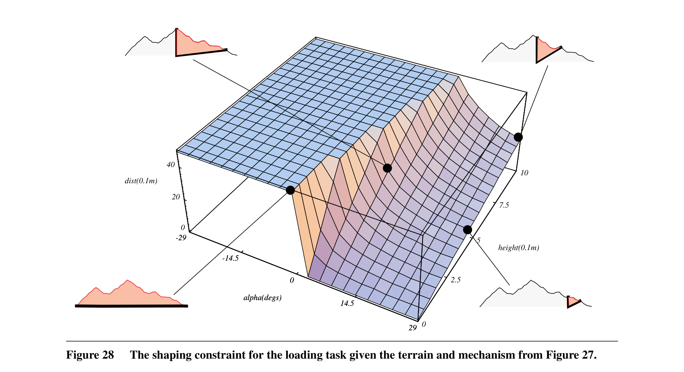
원문 Figure 28 · PDF p.59 — Figure 28 The shaping constraint for the loading task given the terrain and mechanism from Figure 27.
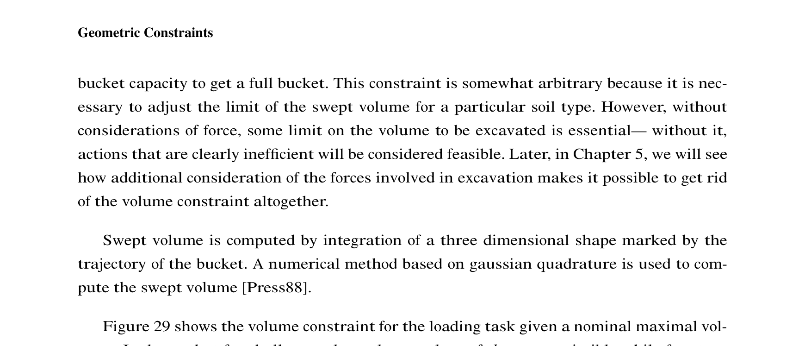
원문 Figure 29 · PDF p.60 — Figure 29 shows the volume constraint for the loading task given a nominal maximal vol-
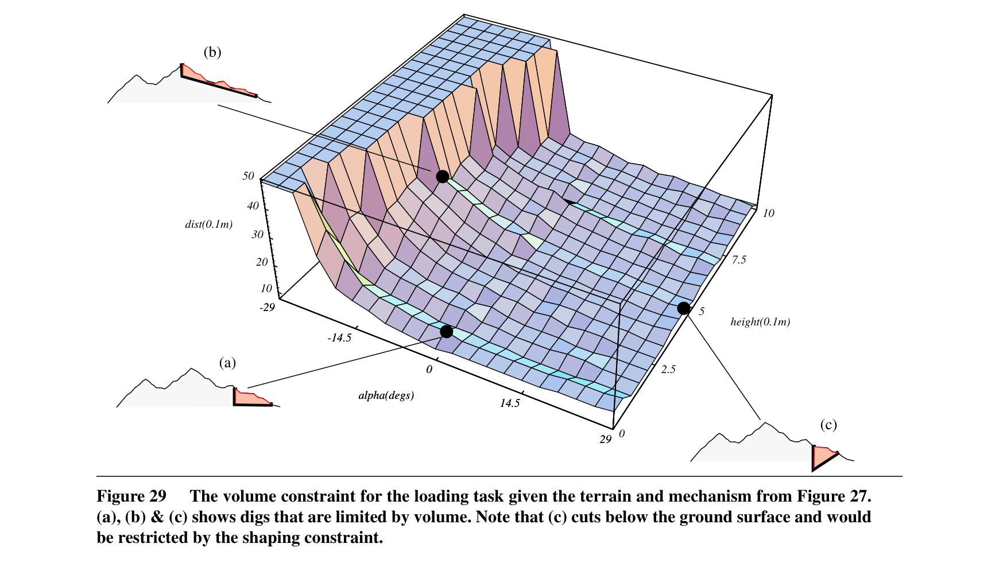
원문 Figure 29 · PDF p.60 — Figure 29 The volume constraint for the loading task given the terrain and mechanism from Figure 27. (a), (b) & (c) shows digs that are limited by volume. Note that (c) cuts below the ground surface and would be restricted by the shaping constraint.
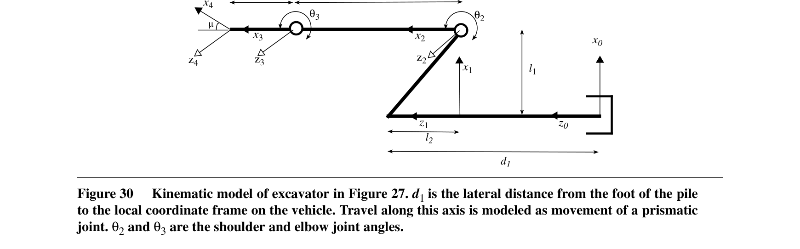
원문 Figure 30 · PDF p.61 — Figure 30 Kinematic model of excavator in Figure 27. d1 is the lateral distance from the foot of the pile to the local coordinate frame on the vehicle. Travel along this axis is modeled as movement of a prismatic joint. θ2 and θ3 are the shoulder and elbow joint angles.
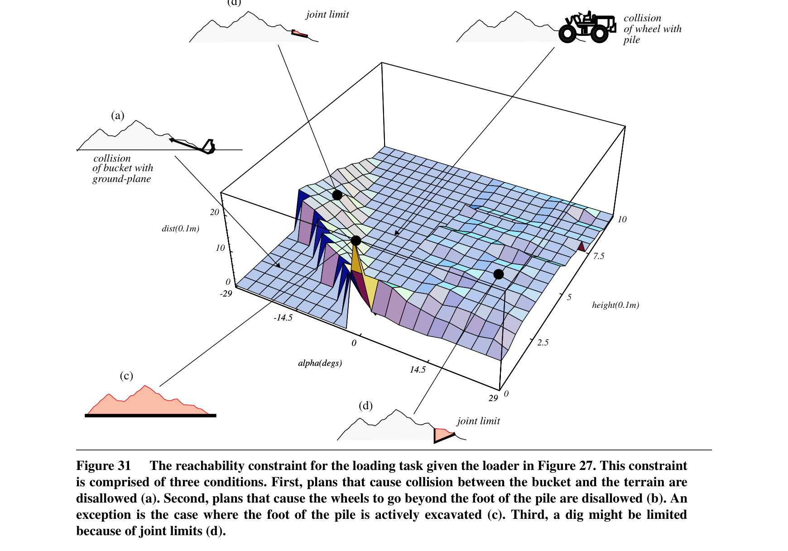
원문 Figure 31 · PDF p.62 — Figure 31 The reachability constraint for the loading task given the loader in Figure 27. This constraint is comprised of three conditions. First, plans that cause collision between the bucket and the terrain are disallowed (a). Second, plans that cause the wheels to go beyond the foot of the pile are disallowed (b). An exception is the case where the foot of the pile is actively excavated (c). Third, a dig might be limited because of joint limits (d).
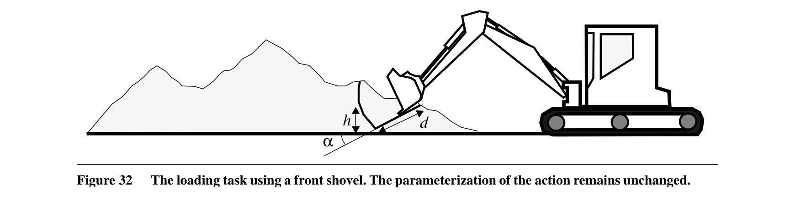
원문 Figure 32 · PDF p.63 — Figure 32 The loading task using a front shovel. The parameterization of the action remains unchanged.
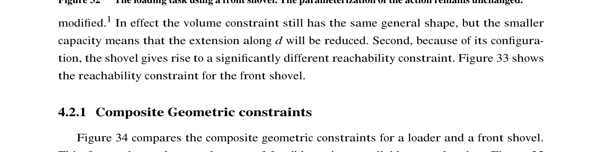
원문 Figure 34 · PDF p.63 — Figure 34 compares the composite geometric constraints for a loader and a front shovel.
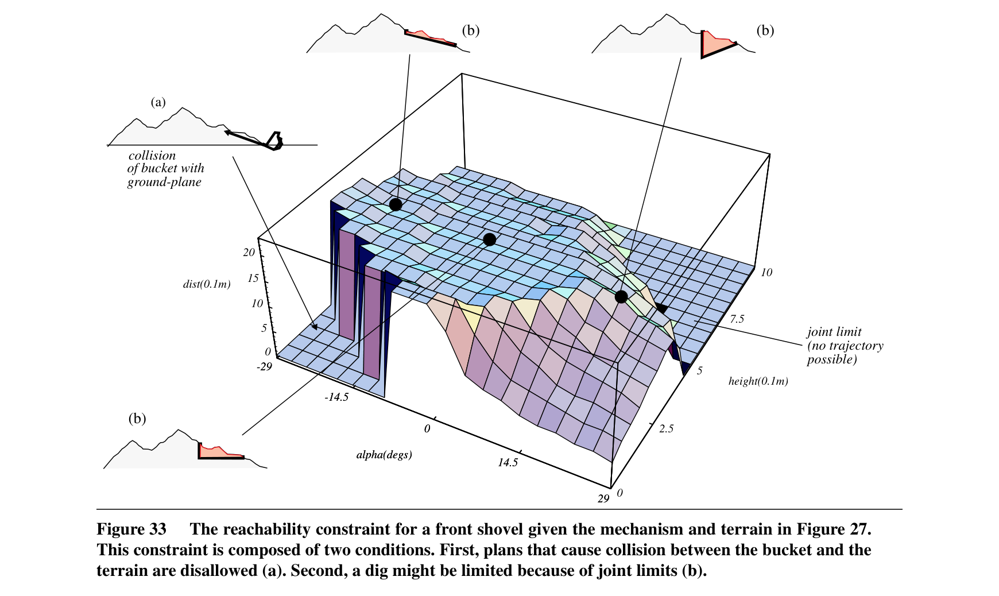
원문 Figure 33 · PDF p.64 — Figure 33 The reachability constraint for a front shovel given the mechanism and terrain in Figure 27. This constraint is composed of two conditions. First, plans that cause collision between the bucket and the terrain are disallowed (a). Second, a dig might be limited because of joint limits (b).
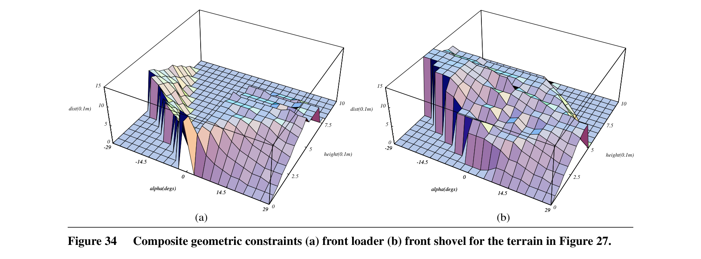
원문 Figure 34 · PDF p.64 — Figure 34 Composite geometric constraints (a) front loader (b) front shovel for the terrain in Figure 27.
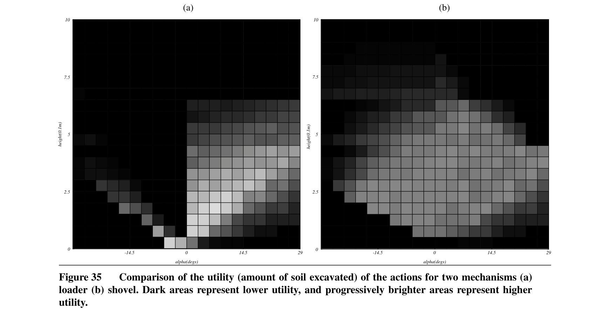
원문 Figure 35 · PDF p.65 — Figure 35 Comparison of the utility (amount of soil excavated) of the actions for two mechanisms (a) loader (b) shovel. Dark areas represent lower utility, and progressively brighter areas represent higher utility.원문 Figure 36 · PDF p.66 — Figure 36 Manipulator arm equipped with a shovel, creating a trench. k is an offset from the robot coordinate frame to point where the excavation starts. α is the approach angle of the bucket into the soil, along distance d1 (penetrate), d2 is a line parallel to the bottom of the trench. The final stage is a curling operation.원문 Figure 37 · PDF p.67 — Figure 37 (a) 3D view of the desired shape of the terrain. (b) 2 D section along trench (dashed line) to be excavated. The solid line represents the state of the existing terrain원문 Figure 38 · PDF p.67 — Figure 38 Two views of the set of independent parameters that meet the shaping constraint for the task of trenching, given the scenario in Figure 37. Note that d1 can be limited by each of the three walls of the trench원문 Figure 39 · PDF p.68 — Figure 39 Two views of the set of independent parameters that meet the volume constraint for the task of trenching, given the scenario in Figure 36.원문 Figure 40 · PDF p.69 — Figure 40 Kinematic model of the manipulator shown in Figure 36. The manipulator has six degree of freedom but only three (shoulder, elbow and wrist pitch) are used during excavation.원문 Figure 41 · PDF p.70 — Figure 41 Two views of the set of independent parameters that meet the reachability constraint for the task of trenching, given the scenario in Figure 36.원문 Figure 42 · PDF p.70 — Figure 42 shows the composite geometric constraint— the intersection between shaping,원문 Figure 42 · PDF p.71 — Figure 42 Two views of the set of all feasible plans that meet all geometric constraints given scenario in Figure 37.원문 Figure 43A · PDF p.71 — Figure 43 A subset of the geometrically feasible action set— those that excavate a volume of soil that is at minimum 90% of the bucket capacity.원문 Figure 42 · PDF p.71 — Figure 42 and Figure 43. Digging actions with smaller d1 values have disappeared in the lat-원문 Figure 44 · PDF p.72 — Figure 44.원문 Figure 44 · PDF p.72 — Figure 44 Another terrain.원문 Figure 45 · PDF p.72 — Figure 45 shows the set of actions that satisfy the composite geometric (shaping, volume원문 Figure 45 · PDF p.72 — Figure 45 The composite geometric constraint given the terrain in Figure 44 and the manipulator in Figure 36.원문 Figure 46A · PDF p.73 — Figure 46 A digging action that meets all geometric constraints but one that should be avoided.원문 Figure 47 · PDF p.73 — Figure 47 The set of plans that meet the “sensible” constraint. In effect, this constraint rejects those actions who trajectories are not completely below the surface of the soil.원문 Figure 48 · PDF p.74 — Figure 48 The set of plans that meet the composite geometric constraint as well as the “sensible” constraint.원문 Figure 49 · PDF p.74 — Figure 49 The set of actions that satisfy the composite geometric and “sensible” constraints, further constrained to those that sweep a volume that is at least 90% of the bucket capacity.원문 Figure 50 · PDF p.79 — Figure 50 (a) A direct-shear test box. This is commonly used to determine soil properties. (b) Experimental determination of soil properties (cohesion and friction).원문 Figure 51 · PDF p.79 — Figure 51 Tools used to determine soil parameters (a) annular shear graph (b) cone penetrometer.원문 Table 1 · PDF p.80 — Table 1 shows typical values for moisture content, cohesion (c), angle of internal friction원문 Table 1 · PDF p.80 — Table 1 Typical values for moisture content, c, and φ for a few soils.원문 Figure 52A · PDF p.80 — Figure 52 A flat blade moving through soil. Soil shears along an internal surface known as the failure surface and the wedge of soil slides along this surface.원문 Figure 53 · PDF p.81 — Figure 53 shows the state of the soil after a blade has been moved for a distance. The soil원문 Figure 53 · PDF p.81 — Figure 53 State of soil after some movement of blade.원문 Figure 54 · PDF p.82 — Figure 54 Reactive force experienced by a blade moving through soil. A force sensor (placed in between the blade and the end effector) measured force while the blade was in motion in the soil. Data was taken at 50 Hz and then smoothed with a 9 point moving average.원문 Figure 55 · PDF p.83 — Figure 55 Static equilibrium analysis using an approximation of the failure surface. Lf is the length of the failure surface, Lt is the length of the tool, Q is the surcharge on the wedge and W is the weight of the soil wedge. After figure in [McKeys85].원문 Figure 56 · PDF p.85 — Figure 56 Determination of the angle of the failure surface, and Nγ원문 Figure 57 · PDF p.85 — Figure 57 Iterative computation of resistive force. The volume of soil displaced is computed at regular time intervals. This volume is used to estimate the force due to surcharge, pressing down on the wedge of soil that slides along the failure surface.원문 Figure 58 · PDF p.87 — Figure 58 An experiment to verify the effect of varying depth, d, using an excavator bucket equipped with a force sensor. The rake angle, ρ, was held constant at 30 degrees. The force data were transformed to measure forces at the tip of the bucket.원문 Figure 59 · PDF p.87 — Figure 59 compares predicted force with measured force. We note that the experiments원문 Figure 59 · PDF p.87 — Figure 59 Measured resistive forces (symbols) vs. predictions based on wedge model (solid lines). In this experiment, an excavator bucket was made to follow a horizontal trajectory at three separate depths (5cm, 10 cm, 15 cm). Three experiments were conducted for each depth.원문 Figure 60 · PDF p.88 — Figure 60 An experiment to verify the effect of varying rake angle, ρ, The approach angle, α, was held constant at 10 degrees.원문 Figure 61 · PDF p.88 — Figure 61 Results from four experiments in which the rake angle was varied (ρ = 20, 30, 40, 50 degs).원문 Figure 62 · PDF p.89 — Figure 62 Angle of failure surface as a function of the rake angle computed using the wedge model.원문 Figure 63 · PDF p.89 — Figure 63 Varying the speed of the tool (α = 10, ρ = 30). Since the model is static, it predicts force much better at slow speeds.원문 Figure 64 · PDF p.90 — Figure 64 Use of the wedge model to compute resistive force during excavation. Recorded data is indicated by circles while force predictions using the wedge model (FEE) are shown by a solid line.원문 Figure 66 · PDF p.94 — Figure 66 Two examples of computing G. The bucket moves along a trajectory described by (α, d1, d2). (a) the bucket has moved a distance d1 * along d1 (b) the bucket has moved d2 ** along d2.원문 Figure 67 · PDF p.95 — Figure 67 Computing G based on an analysis of the mechanics. Terrain ahead of the cutting surface is encoded as a sequences of depths (squared values used). Additionally, we encode the rake angle, and volume of soil displaced.원문 Figure 68 · PDF p.96 — Figure 68. The underlying function is원문 Figure 68A · PDF p.96 — Figure 68 A one dimensional example (one input and one output). A simple function (18) is corrupted with noise and some of the data are removed.원문 Figure 69 · PDF p.98 — Figure 69 Fitting the data set from Figure 68 using global regression. The Solid line represents the approximated function. (a) The basis encodes a linear relationship between x and y (b) The basis uses approximate functions (c) The basis uses exact functions.원문 Figure 70 · PDF p.100 — Figure 70 Fitting data set from Figure 68 using memory based methods. (a) three nearest neighbors are averaged. (b) locally weighted regression with a narrow smoothing kernel. (c) locally weighted regression using a wide smoothing kernel. (d) locally weighted regression using a wide smoothing kernel with approximate basis functions (24).원문 Figure 71 · PDF p.101 — Figure 71 (b) shows fairly good prediction results for as few as 600 points in the training set원문 Figure 71 · PDF p.101 — Figure 71 (a) Prediction time vs. number of input variables using locally weighted regression. (b) Prediction time and error as a function of fraction of data set (3000 points) used. Training points were randomly selected from the data set.원문 Figure 72 · PDF p.102 — Figure 72 Prediction of the function from Figure 68 using a single layer network (a) 10 hidden units (b) 50 hidden units. Each net was shown the noisy data set 5000 times.원문 Figure 73 · PDF p.103 — Figure 73 Prediction of the function from Figure 68 using a single layer network using 5 hidden units and the basis G from (21).원문 Figure 74 · PDF p.104 — Figure 74 Mean residual error in prediction of the x component of the resistive force as a function of number of hidden units. The error is lowest for 30 hidden units for this set of data. After this, the function is overfit by additional hidden units.원문 Figure 75 · PDF p.104 — Figure 75 Two digs. (a) and (b) show elevation profiles of the soil in testbed along the length of the trench that is to be created (marked by dashed lines). Forces at the bucket tip were measured at approximately 8 hz. ka = 1.35, kb = 1.0, αa = 25 degs, αb = 30 degs, d1a = d1b = 0.38 m.원문 Figure 76 · PDF p.106 — Figure 76 Prediction of resistive forces using the wedge model with parameters determined by brute force search. Measured force data is marked with ‘o’. Predicted force data is marked by solid lines.원문 Table 2 · PDF p.106 — Table 2 Weights found by global regression원문 Figure 77 · PDF p.107 — Figure 77 Prediction using global regression with mechanics based basis functions.원문 Figure 78 · PDF p.108 — Figure 78 Prediction using default local weighted regression with mechanics based basis functions.원문 Table 3 · PDF p.108 — Table 3 Relative importance of variables found by MARS원문 Figure 79 · PDF p.109 — Figure 79 shows prediction of the resistive forces using the same kernel width as in Figure 78 but with원문 Figure 79 · PDF p.109 — Figure 79 Prediction using LWR with mechanics based basis functions. Input parameters are scaled based on MARS analysis.원문 Figure 80 · PDF p.110 — Figure 80 Prediction using a back propagation neural network (30 hidden units) with mechanics based basis functions.원문 Table 4 · PDF p.111 — Table 4 Mean Absolute Error (N) between predicted and observed magnitude of resistive force. The results are based on a 10 fold cross-validation with the exception of the results for back propagation which was trained on a block of 3000 points and tested with the remaining 1000 points.원문 Figure 81 · PDF p.112 — Figure 81 Histogram of errors in prediction of resistive force using only forces with observed magnitude greater than 300 N in either the x or z components of the resistive force. using (a) wedge model (b) global regression, (c) local weighted regression, (d) neural nets. Negative errors mean that the resistive force was underestimated.원문 Table 5 · PDF p.113 — Table 5 Other criteria to compare learning methods. D is the number of basis functions, n is the size of the training set, and h is the number of hidden units.원문 Figure 82 · PDF p.115 — Figure 82 Two similar trajectories followed by an excavator bucket.원문 Figure 83 · PDF p.115 — Figure 83 shows the torques due to tip forces during travel along trajectories A & B. On원문 Figure 83 · PDF p.116 — Figure 83 Torques due to tip forces while the robot follows A (solid lines) & B (circles). There is very little difference in the torques because the two Cartesian trajectories are not very different and the resistive force is assumed to be the same in each case.원문 Figure 84 · PDF p.116 — Figure 84 Torques due to gravitational forces while the robot follows A (solid lines) & B (circles).원문 Figure 85 · PDF p.117 — Figure 85 shows the set of plans that satisfy the force constraint for the hydraulic manip-원문 Figure 85 · PDF p.117 — Figure 85 Force Constraint in the action space원문 Figure 86 · PDF p.117 — Figure 86 Comparison between the set of plans that satisfy geometric constraints and those that satisfy force constraints for one k value. Note that in some cases the force constraint is more limiting and in other cases the geometric constraints are more limiting.원문 Figure 87 · PDF p.118 — Figure 87 An illustration of the areas in the action space from Figure 86 where the geometric constraints and force constraints are the limiting factors. The white cells represent areas where the geometric constraints dominate while the black cells are areas where the force constraint dominates.원문 Figure 88 · PDF p.119 — Figure 88 Digs selected based on different criteria (a) lowest torque experienced (b) lowest cumulative torque experienced.원문 Figure 89 · PDF p.126 — Figure 89 Ability to prune the search space based on the shapes of the feasible and infeasible sets. (a) If the feasible set is solid along the direction of scanning can be terminated when a transition is found from the feasible to infeasible sets (b) Pruning is not possible.원문 Figure 90 · PDF p.126 — Figure 90 An example in the trenching task pruning is possible. Presuming that search is conducted along d1, it is possible to terminate search after the shaping constraint is violated for the particular (k, α) pair.원문 Figure 91 · PDF p.128 — Figure 91 Examples of how efficient search can reduce computation time (execution times on Sparc 10 workstation). Shaping, Reachability and Force constraints were used. (a) Torque limit at joint 4 = 500 Nm, maximized volume and minimized greatest torque (c) Torque limit at joint 4 = 1000 Nm, maximized volume and minimized greatest torque (b) Torque limit at joint 4 = 1000 Nm, maximized volume only.원문 Figure 94 · PDF p.134 — Figure 94 The T3 robot and its workspace.원문 Figure 95 · PDF p.134 — Figure 95 Two dimensional view of the manipulators workspace for various values of the bucket pitch angle. The dashed box shows the area in which the excavation experiments are conducted. Even in this box, the robot is not able to reach all orientations that we might specify. Given this situation, the planner must ensure that all digging trajectories required are kinematically feasible.원문 Figure 96 · PDF p.136 — Figure 96 Processing of images from laser scanner. The top left panel shows a range image produced by the laser scanner. The value of each pixel in this image is equal to the range from the scanner to a point in the scene. The top right panel shows a reflectance image. The value of pixels corresponds to the brightness of points in the scene. The bottom left panel shows edges that have been found in the range image. These edges are used to compute areas in the scene that might be occluded. In this case, it is possible to set a bound on the elevation in the occluded region. The bottom right panel shows pixels (dark) that have been filtered out, that is, these pixels are not used in the computation of the elevation map.원문 Figure 97 · PDF p.137 — Figure 97 Example terrain map produced from range image원문 Figure 98 · PDF p.137 — Figure 98 Range values to four points over time. Two kinds of errors are noticed. The first is a random (gaussian) noise around the true value. the second is a systematic variation that happens at a longer time scale. Experiments have shown that this variation is due to ambient temperature.원문 Figure 99 · PDF p.138 — Figure 99 shows the effect of errors in the scaling of range measurements on the estima-원문 Figure 99 · PDF p.138 — Figure 99 The effect of a scaling error in range measurement on the terrain map. If A is the actual profile of the terrain, a scale error of 10% (each range measurement is 90% of true range) will result in the terrain profile shown in B. One method to compensate for this error is to adjust the elevation map based on the error between estimated elevation and actual elevation found by detecting contact with the terrain. This method fails when the terrain is not flat. If the robot starts at point x and descends until contact is found (x’), then the adjusted profile (C) will not accurately depict the true profile.원문 Figure 100 · PDF p.139 — Figure 100 The effect of scaling error on digging trajectories and swept volume (dark area). A dig is planned based on the estimated shape of the terrain (a). If the dig is executed without adjusting for the error in range, the bucket does not engage the terrain fully (b). On the other hand, the if the elevation map is adjusted using the technique shown in Figure 99, the bucket engages the terrain too aggressively (c).원문 Figure 101 · PDF p.139 — Figure 101 Calibration of range measurements. Range from the laser scanner to a set of targets (dark spots on the walls of the soil-box) in the field of the view has been surveyed accurately. Every time a range image is taken, range measurements to the targets are compared to the surveyed range and scaling parameters are computed.원문 Figure 102A · PDF p.140 — Figure 102 A linear least square method is used to determine scaling and offset between measured and surveyed range values. These parameters are used to adjust range measurements in the entire image.원문 Figure 104 · PDF p.141 — Figure 104 Failure of the force sensor to detect the surface of terrain due to oscillation of the end- effector. Bucket is commanded to a destination (a) but it overshoots and contacts the surface of the terrain (b) deforms it, and settles at the destination. Reliable force readings can only be taken when the bucket has stopped moving, so even though the terrain has been contacted, there is no way of knowing this.원문 Figure 105 · PDF p.142 — Figure 105 Two conditions in which the bucket cannot get to a specified pose because of interference with the terrain (a) & (c). The force sensor signals contact (b) & (d) before the bucket can get to the specified pose which in turn can lead to erroneously adjusting the elevation map.원문 Figure 106 · PDF p.142 — Figure 106 shows the architecture of all the modules in the system. Currently, the sys-원문 Figure 106 · PDF p.143 — Figure 106 Computational architecture원문 Figure 108 · PDF p.145 — Figure 108 shows a two dimensional world being operated upon by a front-end loader.원문 Figure 108 · PDF p.145 — Figure 108 Simulation of loading using a front loader in a two dimensional world. A skeleton of the mechanism is shown at three points during the digging trajectory— at the start, at the end of the penetration phase, and at the end of the lift-out phase. The dark regions represent the volume excavated.원문 Figure 109 · PDF p.146 — Figure 109 Simulation of loading using a front shovel in a two dimensional world. Skeletonized links of the robot are shown. The dark regions represent the volume excavated.원문 Figure 111 · PDF p.146 — Figure 111 shows a sequence of digs that a front-end loader performs given a nominal torque원문 Figure 110A · PDF p.147 — Figure 110 A simple model of resistive force experienced by the excavator bucket during excavation. Resistive force is only computed at the point just before lift out from the pile.원문 Figure 111 · PDF p.147 — Figure 111 Simulation of a loading task executed by a front loader. Both geometric and force constraints are used.원문 Figure 113 · PDF p.149 — Figure 113 Excavation with shaping, reachability, volume and force (torque limit = 1000 Nm) constraints. The optimization criteria is minimum cumulative torque over the entire trajectory.원문 Figure 114 · PDF p.151 — Figure 114 Two runs with similar starting conditions. Excavation with shaping, reachability, volume and force constraints. The torque limit has been reduced to 500 Nm. The optimization criteria is minimum cumulative torque.원문 Figure 115 · PDF p.152 — Figure 115 Excavation with shaping, reachability and force (torque limit = 1000 Nm) constraints only. The optimization criteria is minimum cumulative torque.원문 Figure 116 · PDF p.153 — Figure 116 Excavation with shaping, reachability and force (torque limit = 1000 Nm) constraints only. Optimization criteria is to minimize the highest torque (as opposed to minimizing the cumulative torques).원문 Table 6 · PDF p.156 — Table 6 Relative size (lines of C code) of the modules in the working excavation system. Some of the modules (neural networks, locally weighted regression and TCA) are included as libraries and are not fully used in the systems.원문 Table 7 · PDF p.157 — Table 7 Comparison of average execution times for perception and planning for one cycle of a typical trenchimg task.원문 Table A1-1 · PDF p.162 — Table A1-1 Denavit Hartenburg parameters for an excavator backhoe.원문 Table A1-2 · PDF p.164 — Table A1-2 Denavit Hartenburg parameters for the T3 robot.원문 Table A1-3 · PDF p.168 — Table A1-3 Denavit Hartenburg parameters for a front loader.